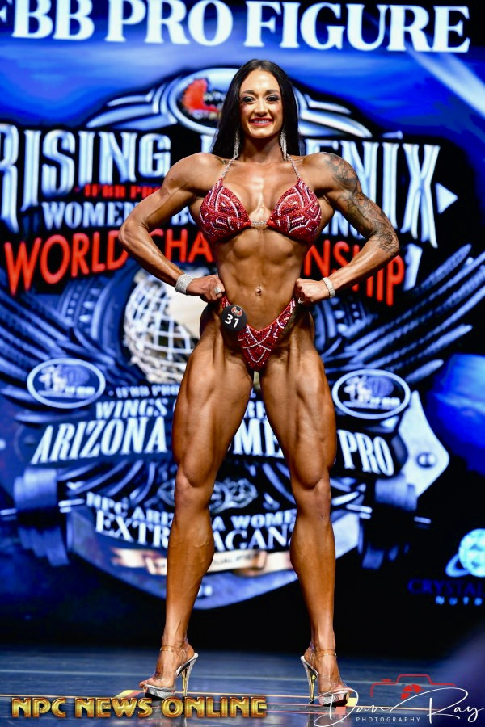

How a Home BIA Scale Nearly Cost David His Competition Prep It was cheap — under $30. He caught himself standing straighter. He let it happen.
David was eight weeks out from his first bodybuilding competition. His smart scale said 9% body fat. He was ecstatic. He posted his progress on Instagram. His coach was skeptical. “Get a DEXA,” the coach said. David got a DEXA. The result: 13.7% body fat. He was off by 4.7 percentage points. That’s the difference between winning and placing. Then The pen in his hand snapped. He stared at the pieces, not surprised. Then he called me. “How can a $200 scale be that wrong?” he asked. The Bioelectrical Impedance Guide explains why the scale lied.
David had used a consumer BIA scale at home. He weighed himself at 6 AM, after voiding. He thought he was following the protocol. But he didn’t account for two things: his hydration was inconsistent because he was carb‑loading, and his skin was thick from calluses on his feet. His scale used a single frequency and foot electrodes only. It assumed his upper body had the same composition as his lower body. David’s lower body is leaner than his upper body – like many people. The scale’s algorithm didn’t know that. It guessed. It guessed wrong. The Body Fat Percentage Estimator gave him a second opinion.
I watched her face change. It took three seconds.
David had never used skinfolds. He didn’t trust them. He trusted his scale because it was expensive and had an app. I showed him the research. A 2026 Consumer Reports study tested 12 popular BIA scales against DEXA. The average error was 6.2%. One model was off by 9.8%. “Consumer BIA scales are not medical devices,” I told him. “They’re fitness gadgets.” David learned his lesson. He now uses skinfolds for weekly tracking and DEXA for prep checkpoints. He still uses his smart scale, but he doesn’t trust its absolute number. He watches the trend – morning to morning, same conditions – and ignores the number itself. “I was ready to step on stage at 9%,” he said. “I would have been embarrassed. My coach would have been angry. I could have lost the competition over a $200 scale.” He read the email three times. The third time, he laughed out loud. Not helpful.
Don’t let that happen to you. Consumer BIA scales are tools, not truth. Use them for trends. Get DEXA for the real number. He tucked the result into his wallet. He'd pull it out later, just to look.